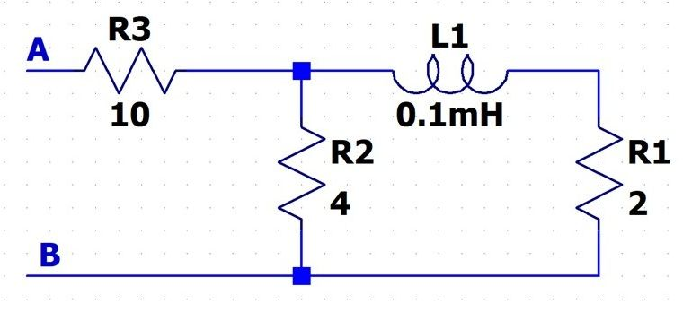

Question 5
Reduce the following circuit to an equivalent Impedance. Show all your work clearly articulating each step in the reduction process. If you don't like to draw diagrams you can use words (e.g. 5 ohm and 3+4j in series). However, don't just put them into equations and expect me to figure out what you did by the equation. You may assume the inductor is ideal (e.g. no series resistance). Assume w = 10,000 rad/sec.

5A) Equivalent Resistance [5A]